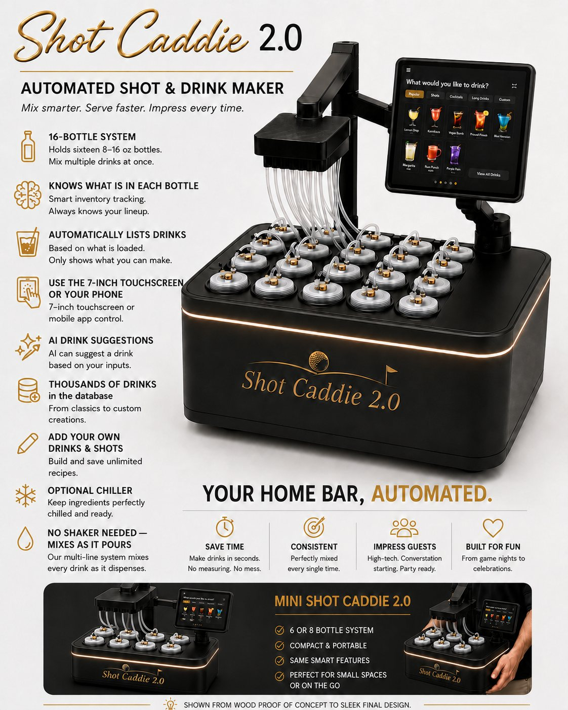

Automated system
Shot Caddie 2.0
Mix smarter. Serve faster. Impress every time. Load sixteen bottles and let your caddie measure, mix, and pour — from the 7-inch touchscreen, your phone, or a suggestion from the AI.

Your home bar, automated
It knows what's loaded — and what it can make
16-bottle system
Holds sixteen 8–16 oz bottles in any combination of liquors and mixers.
Smart inventory
The system knows what's in each bottle and always knows your lineup.
Only what's possible
Automatically lists the shots and drinks you can make from what's loaded.
Touchscreen or phone
Pick your pour on the 7-inch touchscreen or from the app on your phone.
AI drink suggestions
Tell it what you're in the mood for and let the AI pick your drink.
Thousands of recipes
A cloud drink database from classics to custom creations — and you can save your own.
Mixes as it pours
The multi-line system blends every drink as it dispenses. No shaker needed.
Optional chiller
Keep ingredients perfectly chilled so every pour lands cold.
Walk-up service
Queue it from the couch. Claim it at the Caddie.
Line up drinks from your phone, then release your pour at the machine with a QR code — or, with the optional facial-recognition feature, just look at the camera. The 2.0 recognizes you, pulls up your favorite drinks, and hands over anything you've queued. Optional features can be switched off entirely.
Load sixteen bottles
Any mix of liquors and mixers. Tell the system what's in each slot.
Browse what's possible
The menu shows only drinks you can actually make with what's loaded.
Pick — or ask
Choose on the touchscreen or your phone, or let the AI suggest based on your inputs.
Walk up and pour
Queued drinks release with a QR code or a glance at the camera.

The details
Scorecard
| Bottles | Sixteen 8–16 oz bottles, any combination of liquors and mixers, with quick swaps |
|---|---|
| Controls | 7-inch touchscreen or phone app — for choosing drinks and configuring the system |
| Brains | Smart bottle inventory, recipe matching, and AI drink suggestions based on your inputs |
| Library | Thousands of drinks and shots in the database, plus unlimited recipes of your own |
| Pour | Multi-line system mixes each drink as it dispenses — no shaker needed |
| Options | Ingredient chiller · facial recognition for favorites and pickup · phone queueing with QR-code or face claim |
| Availability | In development — launching first on Kickstarter. Join the list. |
| Optional features may evolve before launch. | |
Small spaces & road games
Mini Shot Caddie 2.0
Same smart features as its big brother in a compact, portable build — a 6- or 8-bottle system that's perfect for small spaces or taking the 19th hole on the go.
Launch list
Be first on the tee
The 2.0 and the Mini launch first on Kickstarter. Join the list for timing, build photos, and preorder announcements.
No spam — only Shot Caddie updates.